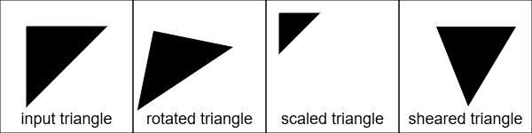

In this task we want you to implement some basic linear transformations (i.e. transformations with $\vec{t} = 0$): rotation, scaling and shearing.
The corresponding functions can be found in Basic1_1.
Implement them to rotate, scale and shear the input triangle by the given values.
The result should look like the row above.
A rotation transformation can be substituted by a series of shear transformations:
\begin{eqnarray}
\nonumber
\left(
\begin{array}{*{3}{c}}
\cos(\alpha) & -\sin(\alpha) \\
\sin(\alpha) & \cos(\alpha) \\
\end{array}
\right)
=
\left(
\begin{array}{*{3}{c}}
1 & -\tan(\frac{\alpha}{2}) \\
0 & 1 \\
\end{array}
\right)
\left(
\begin{array}{*{3}{c}}
1 & 0 \\
\sin(\alpha) & 1 \\
\end{array}
\right)
\left(
\begin{array}{*{3}{c}}
1 & -\tan(\frac{\alpha}{2}) \\
0 & 1 \\
\end{array}
\right)
\end{eqnarray}
Implement the shearing functions to perform a rotation and call them with the right parameters in Basic1_2.
Render the triangle after each shearing step.
After the third shearing step, the triangle should look like the rotated triangle from the previous subtask.
Given two affine transformations $f_1$ and $f_2$
with linear parts $\mathbf{A}_1$,
$\mathbf{A}_2$ and translation vectors $\vec{t}_1$, $\vec{t}_2$ respectively, the composition $f_2 \circ f_1$ is also affine:
$$f_1(\vec{x}) = A_1\vec{x} + \vec{t}_1 \text{ and } f_2(\vec{x}) = A_2\vec{x} +\vec{t}_2 \Rightarrow (f_2 \circ f_1)(\vec{x}) = A_{1,2}\vec{x} + \vec{t}_{1,2}$$
Determine its linear part $A_{1,2}$ and its translation vector $\vec{t}_{1,2}$.
Implement the corresponding formula in the function Basic1_3.CompositeAffineTransformations().
Below you see from left to right the input triangle, the triangle transformed with $f_1$, the triangle transformed with $f_1$ and $f_2$ in succession and the input triangle transformed with the composition of both transformations.
Note that the two rightmost triangle images should be the same.
In the following we consider the two-dimensional case $(n=2$).
Given three points
$$P_0=[a_0, b_0], \quad P_1=[a_1, b_1], \quad P_2=[a_2, b_2],$$
show that there is a unique affine mapping $f$ such that
$$
f([0,0])= P_0, \qquad f([1,0])= P_1, \qquad f([0,1])= P_2
$$
and determine its linear part and its translation vector.
Using this mapping you can transform the unit triangle (with the vertices $[0,0]$, $[1,0]$, $[0,1]$) to an arbitrary other triangle (with vertices $P_0$, $P_1$, $P_2$).
Implement the formula in Basic1_4.ComputeMapping().
The result is shown below. On the left you see the unit triangle and on the right the target triangle. In the middle you see the transformed unit triangle.
This task deals with the effect of linear transformations on objects' normals. In the leftmost image, you can see a rectangle and its normals. The picture in the middle shows both the rectangle and the edge normals transformed with the same linear transformation, a shearing operation along the $x$ axis. Obviously, the normals lose their defining behaviour when transformed with the shearing transformation: They are not perpendicular to the edges anymore.
Therefore, in order to transform normals correctly, you need to set up a new linear transformation stored in the so-called
normal matrix. Find the creation of the normal matrix in the lecture, implement it
in Basic2.js and achieve correct normals in the rightmost picture.
From the first exercise you know that an affine transformation has the form:
$$ f(\vec{x}) = \mathbf{A}\vec{x} + \vec{t} $$
Thus, the transformation consists of a multiplication and an addition.
We now reformulate the transformation to:
$$ \hat{f}(\vec{x}) = \left( \begin{array}{c} f(\vec{x}) \\ 1 \end{array} \right) = \left[ \begin{array}{cc} \mathbf{A} & \vec{t} \\ {\begin{array}{cc} 0 & 0 \end{array}} & 1 \end{array} \right] \left( \begin{array}{c} \vec{x} \\ 1 \end{array} \right)$$
As can be seen, by lifting the coordinates from 2D to 3D, we can represent the affine transformation as a linear transformation.
The new coordinate $\left( \begin{array}{c} \vec{x} \\ 1 \end{array} \right)$ is called homogeneous coordinate.
For this task we want you to work in homogeneous coordinates.
The composition of two affine transformations in homogeneous coordinates is a simple matrix-matrix multiplication of the corresponding matrices.
Have a look at the vertex shader shader_default.vs to see how the transformation is applied.
In this task you are asked to implement the rotation and translation of the luminaries in a solar system.
Note that some luminaries rotate around others resulting in a hierarchical structure.
A luminary consists of several attributes like its radius, the radius of the orbit, the color and the shader program used to draw the luminary.
The most important attributes are the luminary.speed value which specifies the rotational speed of the luminary around the parent object
and the luminary.modelMatrix which places the luminary relatively to the parent object in space.
You are asked to implement the recursive Basic3.drawLuminary() function.
The function is called with the root of the solar system - the sun (see drawScene()).
For each luminary, you have to concatenate three matrices:
luminary.modelMatrix)
modelMatrixParent)
First set up the rotation matrix. Next, concatenate the three matrices together - be careful with the order!
Finally, you have to call the drawLuminary() function recursively for each child, passing on the computed model matrix.
From now on, all advanced exercises will be implemented in C++. If you are not familiar with C++, check out our C/C++ Tutorium on StudOn. You can program on your own PC, but it is recommended that you develop your solutions directly in the HuberCIP. If it does not compile in the HuberCIP, you will receive 0 points.
Open up a terminal and type in the following commands:
cd ~/somepath/Exercise4/Advanced
cd build
cmake ..
make
cd ~/somepath/Exercise4/Advanced
./cg
Install required libraries:
sudo apt-get install libglew-dev libglm-dev libsdl2-dev libpng-dev
Now proceed as if you were in the HuberCIP.
Install CMake and download the dependencies from StudOn.
For Visual Studio 2015, you can find precompiled dependencies in precomp_vs2015_64.
Open up CMake and set the path to the source code to the Exercise4/Advanced path.
Set the path where you want to build the binaries to the Exercise4/Advanced/build path.
Then click on "Add Entry" and type "CMAKE_INSTALL_PREFIX" into the name field.
Enter the path to the folder precomp_vs2015_64 (ended by /) and hit OK.
Then click on "Configure", choose "Visual Studio 14 2015 Win64" and hit "Finish".
Click "Generate" to obtain a Visual Studio solution.
You can find the .sln file in the build folder.
Open it and in the solution explorer, right-click the "cg" project and click "Set as StartUp Project".
Be sure to add the bin folder to your Visual Studio library path.
To do so, right-click the project again and go to Properties->Configuration Properties->Debugging and put "PATH=%PATH%;path-to-precomp\precomp_vs2015_64\bin;" into the Environment field.
Compile and run with Visual Studio.
If the shaders/objects cannot be loaded, make sure that the Project Directory is set to the Advanced folder.
If you want to use a different version of Visual Studio, you can compile and install the dependencies yourself using CMake and Visual Studio. Then use CMake like in the explanation above with CMAKE_INSTALL_PREFIX set to the location where you installed the dependencies.
In this exercise, your task is to create a simulation of the solar system consisting of sun, earth and moon in 3D.
We use measured parameters from the actual solar system to create a more or less realistic simulation.
The final result should look like the image below.
You can run the reference binary advanced_reference to validate your results.
Tips and notes:
All your work has to be done in the method CG::update(float dt) in cg.cpp.
Before you start, have a look at the header cg.h.
All relevant parameters are defined here.
These parameters can be modified at runtime through the GUI.
Times are scaled such that 1 earth day equals to 1 second.
The timeScale parameter lets you speed up or slow down the simulation.
Compute the 4x4 transformation matrix of the sun. The following properties must be met:
sunRadius. sunRotationTime.
sunObliquity. Compute the 4x4 transformation matrix of the earth. The following properties must be met:
earthRadius. earthRevolutionTime and earthOrbitRadius. earthRotationTime. earthObliquity. Compute the 4x4 transformation matrix of the moon. The following properties must be met:
moonRadius. moonRevolutionTime and moonOrbitRadius. moonRotationTime. Sidenote: The moon rotates at the same speed as it revolves around the earth. That is why we always see the same side of the moon. moonOrbitalInclination. moonObliquity.
Visualize the orbit of the moon. Calculate the transformation matrix moonOrbit such that the ring is rendered at the correct location.